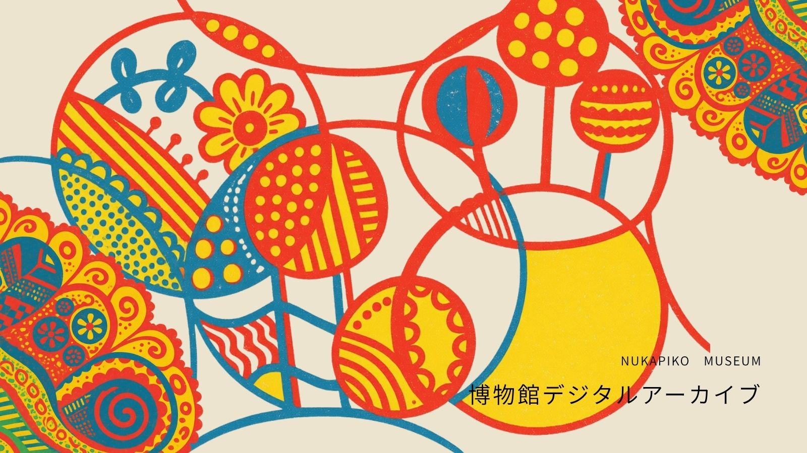
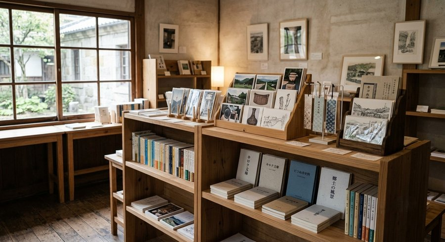

当館の主な常設展示・特別収蔵品について、写真とあわせてご紹介します。
実際の展示は、光の当たり方や展示ケースとの距離によって印象が異なりますので、ぜひ現地でもご覧ください。

■ 特別収蔵品
プッチンプリン容器タワー

令和8年度最重要保存物件。市内在住の市民が数年間の情熱を注ぎ込み、自宅のリビングで静かにそびえ立たせていた容器タワーです(全4段・高さ約1.5メートル)。
家族からの「いい加減に捨てて」という強い廃棄圧を受け絶滅の危機に瀕していたところを、 不要不急保存課が保護し、当館での永久凍結保存が決定しました。
豹柄折りたたみ式守護傘(通称:文明時代の御守り傘)

現代人の心の雨に備える、野生の携帯型守護具。
普段は全長30センチメートルの静かな折りたたみ傘でありながら、持ち手には門番をイメージした「さすまた風グリップ」を搭載しています。
ピコぬ市生活安全委員会も推奨する、現代の境界線認識補助具です。
■ 常設展示
記録具の間(ま)

手帳・日誌・レシートなど、記録のために使われた道具の変遷を紹介する展示です。
農作業日誌、家計簿、メモ帳など、市民の生活とともにあった記録具を年代順に ご覧いただけます。
連結技術資料室

市の基幹産業である鉄道連結技術の歴史資料を展示しています。
ネジ・バッファ式連結器 (1880年代)から、現行のぬかピコ式フレキシブル連結にいたるまで、実物・模型・ 技術図面をあわせてご紹介しています。
民芸と余白

市内の職人による民芸品と、その制作過程を紹介する展示です。
染物、陶器、 ワイヤークラフトなど、日用品と手仕事の間にあるものに焦点をあてています。
■ 館内の様子
常設展示室

「ピコぬ市の歩み」「郷土の生活文化」などのパネルとあわせて、市の記録文化を 通史的にご覧いただける展示室です。
収蔵庫(非公開エリア)

一般公開はしていない収蔵スペースです。寄贈・寄託いただいた資料は、公開前の 期間、こちらで整理・保管しています。
ミュージアムショップ

館内併設のミュージアムショップです。ポストカードや図録などの通常のグッズに加え、 市内作家による書籍もあわせて紹介しています。詳しくは ミュージアムショップのページをご覧ください。
■ お問い合わせ
| 営業時間 | 9:00〜17:00(入館は16:30まで) |
|---|---|
| 休館日 | 月曜日(祝日の場合は翌平日)、年末年始 |
| 所在地 | ピコぬ市記録町1丁目5番地 |
| 電話番号 | ぬぬ-ぬかピコ-7930(なくさない) |